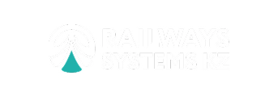

ТОО «Railways Systems KZ» – крупный оператор железнодорожной инфраструктуры и логистических сервисов Казахстана. Компания работает с грузовыми и пассажирскими перевозками, управлением вагонным парком, диспетчеризацией и сложными логистическими маршрутами по всей территории Казахстана.
rws.kz
02
Помощь сотрудникам разобраться в Bitrix24, освоение ключевых инструментов портала и применение их в ежедневной работе.
Сотрудники использовали возможности Битрикс24 не в полном объёме
Не было единого понимания, какой инструмент использовать для конкретной задачи
Возникали сложности при работе с задачами, CRM, календарем и другими разделами
Сотрудникам не хватало практических знаний для самостоятельной работы в системе
03
Компания уже использует Bitrix24 как единое рабочее пространство, поэтому для эффективной работы сотрудников было важно сформировать понятный алгоритм работы с основными инструментами системы.
Систематизировать знания команды о возможностях Битрикс24
Научить эффективно работать с задачами и проектами
Освоить инструменты коммуникации, календаря и работы с файлами
Разобрать работу с CRM, лидами, сделками и планированием дел
Закрепить знания на реальных рабочих ситуациях
04
Мы организовали обучение в двух форматах – онлайн и офлайн в головном офисе компании
г. Экибастуз
Zoom
Казахстан
Офис
Онлайн-программа проходила в 3 потока по 10 сотрудников. Всего команда провела 6 обучающих встреч.
За это время специалисты b24.kz последовательно разбирали отдельный блок возможностей Bitrix24, показывали инструменты на практике и отвечали на вопросы сотрудников.
Это позволило участникам не просто слушать объяснения, а ориентироваться в интерфейсе и лучше понимать логику работы системы
что входило в программу
Чтобы дополнить онлайн-обучение практической работой, специалист b24.kz приехал в Экибастуз и провел очное обучение для сотрудников ТОО «Railways Systems KZ».
Офлайн-часть была организована в формате двух дней.
1 день был посвящен лекционной части и последовательному разбору возможностей Bitrix24.
2 день полностью посвятили вопросам сотрудников в рабочем контексте. Специалист также разбирал конкретные ситуации и помогал разобраться с инструментами портала
05
Главная сложность проекта заключалась не в технической настройке Bitrix24, а в формировании у сотрудников понимания какие функции им действительно нужны, и как правильно применять.
Поэтому обучение мы выстроили от базовых возможностей к более специализированным:
понять структуру портала
освоить основные инструменты
попробовать их на практике
разобрать вопросы
научиться применять Bitrix24 в рабочих задачах
Позволил системно обучить сотрудников несколькими потоками.
Дала возможность подробно разобрать индивидуальные вопросы и реальные рабочие ситуации
06
Главным результатом стало понимание логики работы портала: сотрудники получили представление о том, какие возможности есть в Bitrix24, как между собой связаны основные инструменты и как применять их в ежедневной работе.
освоили постановку обычных и регулярных задач
научились работать с проектными группами
разобрались с календарем, мессенджером и общим диском
получили базовое понимание работы CRM
познакомились с лидами, сделками и планированием дел
получили практический опыт работы с инструментами Bitrix24
Новые рабочие будни
Дополнительное обучение
Дополнительное обучение
Оптимизация рабочих процессов
Расширение автоматазации
07
После обучения компания может развивать использование портала уже на основе сформированного понимания системы — подключать дополнительные инструменты, оптимизировать рабочие процессы и постепенно расширять автоматизацию.
08
Отдел маркетинга ТОО «Railways Systems KZ»
Проходили обучение у команды b24.kz по работе с Bitrix24. Особенно полезным было то, что обучение было не только теоретическим — специалисты подробно показывали, как самостоятельно настраивать роботов, автоматизацию, бизнес-процессы и другие инструменты системы.
Все объясняли понятно и на практических примерах, отвечали на вопросы и помогали разобраться именно с нашими рабочими задачами. Благодаря этому мы получили не просто общие знания о Bitrix24, а практическое понимание того, как самостоятельно настраивать и развивать систему дальше.
Отдельно отмечу профессионализм, компетентность и готовность подробно разбирать возникающие вопросы. Обучение было действительно полезным и применимым в работе.
Спасибо команде b24.kz за качественное обучение и практический подход!